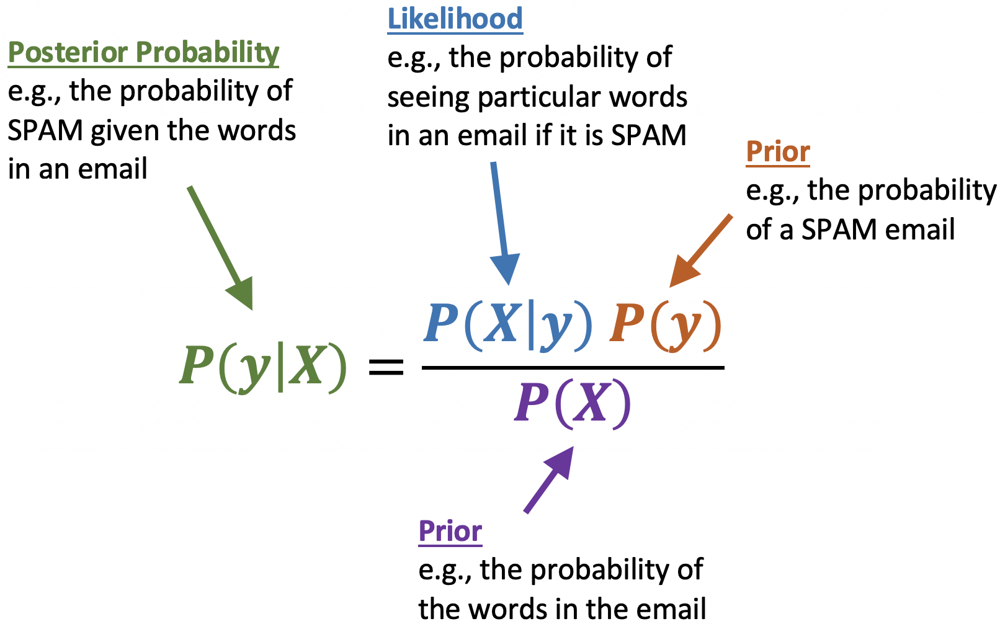
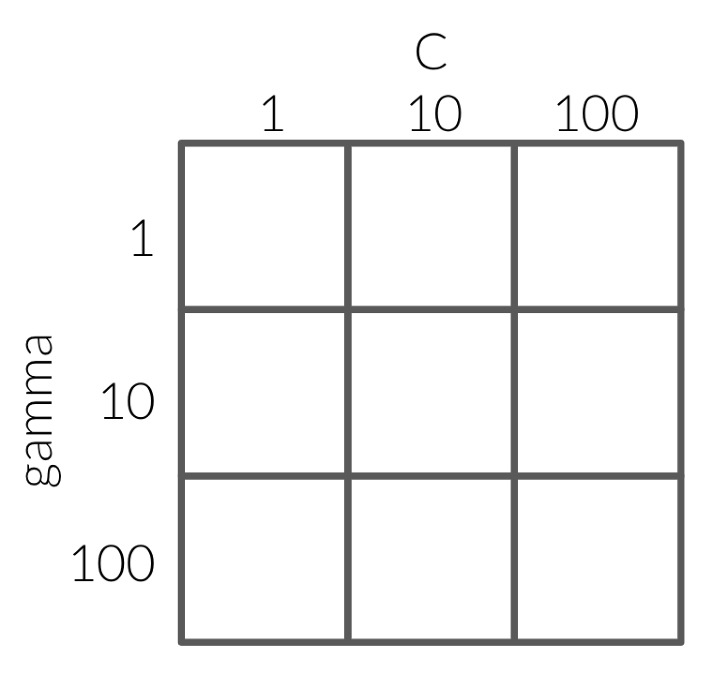

Lecture 6 - Naive Bayes and Hyperparameter Optimization¶
Hayley Boyce, Wednesday, May 5th, 2021
# Importing our libraries
import pandas as pd
import altair as alt
import numpy as np
from sklearn.tree import DecisionTreeClassifier
from sklearn.dummy import DummyClassifier, DummyRegressor
from sklearn.neighbors import KNeighborsClassifier, KNeighborsRegressor
from sklearn.model_selection import cross_validate, train_test_split
from sklearn.svm import SVR, SVC
import sys
sys.path.append('code/')
from display_tree import display_tree
from plot_classifier import plot_classifier
import matplotlib.pyplot as plt
# Preprocessing and pipeline
from sklearn.impute import SimpleImputer
from sklearn.metrics.pairwise import euclidean_distances
from sklearn.pipeline import Pipeline, make_pipeline
from sklearn.preprocessing import OneHotEncoder, OrdinalEncoder, StandardScaler, MinMaxScaler
House Keeping¶
Quiz Today!
Result of Polls
Assignment due Monday
Project groups this week
Project instructions next week
Heavy class today, more learning, less practice (sorry!)
Lecture Learning Objectives¶
Explain the naive assumption of naive Bayes.
Predict targets by hands-on toy examples using naive Bayes.
Use
scikit-learn’sMultiNomialNB.Use
predict_probaand explain its usefulness.Explain the need for smoothing in naive Bayes.
Explain how
alphacontrols the fundamental tradeoff.Explain the need for hyperparameter optimization
Carry out hyperparameter optimization using
sklearn’sGridSearchCVandRandomizedSearchCV.
Five Minute Recap/ Lightning Questions¶
What kind of preprocessing must I do if I have a feature with categories that have an order to them?
How many columns do I need for a binary feature?
What tool do we use to preprocess all our pipelines and build a model without breaking the golden rule?
Between
Pipeline()andmake_pipeline(), which one assigns names to the steps on our behalf?In text data, what are our features made up of?
Some lingering questions¶
How do I tune multiple hyperparameters at once?
What algorithm works well with our
spam,non spamproblem?
Naive Bayes introduction - spam/non spam¶
Last lecture we saw this spam classification problem where we used CountVectorizer() to vectorize the text into features and used an SVC to classify each text message into either a class of spam or non spam.
\(X = \begin{bmatrix}\text{"URGENT!! You have been selected to receive a £900 prize reward!",}\\ \text{"Lol your always so convincing."}\\ \text{"Congrats! 1 year special cinema pass for 2 is yours. call 09061209465 now!"}\\ \end{bmatrix}\) and \(y = \begin{bmatrix}\text{spam} \\ \text{non spam} \\ \text{spam} \end{bmatrix}\)
For years, the best spam filtering methods used naive Bayes.
Naive Bayes is based on Bayes’ Theorem:
{kind=link}
This is our first probabilistic classifier where we think of learning as a problem of statistical inference.
Other applications of Naive Bayes:
Folder ordering, document clustering, etc.
Sentiment analysis (e.g., movies, restaurants, etc.)
Classifying products into groups based on descriptions
Naive Bayes from scratch¶
Let’s do some naive Bayes calculations by hand🖐 🤚 .
Yes, there is going to be some math here but it’s going to be really helpful in understanding how this algorithm works!
Below we have a few texts and they are classed as either being spam or non spam.
df = pd.DataFrame({'X': [
"URGENT!! As a valued network customer you have been selected to receive a £900 prize reward!",
"Lol you are always so convincing.",
"Sauder has interesting courses.",
"URGENT! You have won a 1 week FREE membership in our £100000 prize Jackpot!",
"Had your mobile 11 months or more? U R entitled to Update to the latest colour mobiles with camera for Free!",
"Sauder has been interesting so far." ],
'y': ["spam", "non spam", "non spam", "spam", "spam", "non spam"]})
df
| X | y | |
|---|---|---|
| 0 | URGENT!! As a valued network customer you have... | spam |
| 1 | Lol you are always so convincing. | non spam |
| 2 | Sauder has interesting courses. | non spam |
| 3 | URGENT! You have won a 1 week FREE membership ... | spam |
| 4 | Had your mobile 11 months or more? U R entitle... | spam |
| 5 | Sauder has been interesting so far. | non spam |
We know that we need to encode categorical data and transform it to numeric data to use it with machine learning since categoric columns throw an error when we try to fit our model.
This sounds like a job for CountVectorizer() since we have words that need to be converted into features!
Here we are going to set max_features=4 to make our calculations a little easier and stop_words='english' so we are getting meaningful words as features and not stop words.
from sklearn.feature_extraction.text import CountVectorizer
count_vect = CountVectorizer(max_features = 4, stop_words='english')
data = count_vect.fit_transform(df['X'])
train_bow_df = pd.DataFrame(data.toarray(), columns=sorted(count_vect.vocabulary_), index=df['X'])
train_bow_df['target'] = df['y'].tolist()
train_bow_df
| free | prize | sauder | urgent | target | |
|---|---|---|---|---|---|
| X | |||||
| URGENT!! As a valued network customer you have been selected to receive a £900 prize reward! | 0 | 1 | 0 | 1 | spam |
| Lol you are always so convincing. | 0 | 0 | 0 | 0 | non spam |
| Sauder has interesting courses. | 0 | 0 | 1 | 0 | non spam |
| URGENT! You have won a 1 week FREE membership in our £100000 prize Jackpot! | 1 | 1 | 0 | 1 | spam |
| Had your mobile 11 months or more? U R entitled to Update to the latest colour mobiles with camera for Free! | 1 | 0 | 0 | 0 | spam |
| Sauder has been interesting so far. | 0 | 0 | 1 | 0 | non spam |
Suppose we are given 2 text messages in and we want to find the targets for these examples, how do we do it using naive Bayes?
First, let’s get a numeric representation of our text messages.
test_texts = ["URGENT! Free!!", "I like Sauder"]
data = count_vect.transform(test_texts).toarray()
test_bow_df = pd.DataFrame(data, columns=count_vect.vocabulary_, index=test_texts)
test_bow_df
| urgent | prize | sauder | free | |
|---|---|---|---|---|
| URGENT! Free!! | 1 | 0 | 0 | 1 |
| I like Sauder | 0 | 0 | 1 | 0 |
Let’s look at the text: “URGENT! Free!!”
Is this spam or non spam?
So what we want to know is:
We really only care which one of these is bigger and whichever probability is larger is how we can classify our sentence as spam or non spam.
Remember our Bayes’ Theorem is the following:
In this case:
\(X\) is the representation of the words in our text ie; \(\text{free} = 1, \text{prize} = 0, \text{sauder} = 0, \text{urgent} = 1\)
\(y\) is our target either spam or non spam
Substituting into Bayes rule we get:
Now, there are two reasons naive Bayes is so easy:
We can cancel out the denominator which leads us to this:
We can simplify the numerator
Naive Bayes’ approximation¶
We assume each feature (word) is conditionally independent. (Assume that all features in \(X\) are mutually independent, conditional on the target class.)
In general, $\(P(\text{message} \mid \text{spam}) = P(w_1, w_2, . . . , w_d \mid \text{spam}) \approx \prod_{i=1}^{d}P(w_i \mid \text{spam})\)$
That means simply:
And for the other class non spam:
So our equation has boiled down to is:
Now we just need to calculate each of those probabilities which is easy!
Estimating \(P(\text{spam} \mid \text{message})\) (The left side of our equation)¶
We need the following:
Prior probability: \(P(\text{spam})\)
Conditional probabilities:
\(P(\text{free} = 1 \mid \text{spam})\)
\(P(\text{prize} = 0 \mid \text{spam})\)
\(P(\text{sauder} = 0 \mid \text{spam})\)
\(P(\text{urgent} = 1 \mid \text{spam})\)
train_bow_df
| free | prize | sauder | urgent | target | |
|---|---|---|---|---|---|
| X | |||||
| URGENT!! As a valued network customer you have been selected to receive a £900 prize reward! | 0 | 1 | 0 | 1 | spam |
| Lol you are always so convincing. | 0 | 0 | 0 | 0 | non spam |
| Sauder has interesting courses. | 0 | 0 | 1 | 0 | non spam |
| URGENT! You have won a 1 week FREE membership in our £100000 prize Jackpot! | 1 | 1 | 0 | 1 | spam |
| Had your mobile 11 months or more? U R entitled to Update to the latest colour mobiles with camera for Free! | 1 | 0 | 0 | 0 | spam |
| Sauder has been interesting so far. | 0 | 0 | 1 | 0 | non spam |
Prior probability
\(P(\text{spam}) = 3/6\)
Conditional probabilities
What is \(P(\text{free} = 1 \mid \text{spam})\) ??
Given target is spam, how often “free”= 0? \(= 2/3\)
\(P(\text{prize} = 0 \mid \text{spam}) = 1/3\) -\(P(\text{sauder} = 0 \mid \text{spam}) = 3/3\)
\(P(\text{urgent} = 1 \mid \text{spam}) = 2/3\)
Now we have everything we need to do our calculations!
spam_prior = 3/6
sauder0_spam = 3/3
free1_spam = 2/3
prize0_spam = 1/3
urgent1_spam = 2/3
spam_prob = spam_prior * sauder0_spam * free1_spam * prize0_spam * urgent1_spam
spam_prob
0.07407407407407407
Ok, So we’ve done our left side! Now we have to do the right!
Estimating \(P(\text{non spam} \mid \text{message})\) (The right side of our equation)¶
Now we need the following:
Prior probability: \(P(\text{non spam})\)
Conditional probabilities:
\(P(\text{free} = 1 \mid \text{non spam})\)
\(P(\text{prize} = 0 \mid \text{non spam})\)
\(P(\text{sauder} = 0 \mid \text{non spam})\)
\(P(\text{urgent} = 1 \mid \text{non spam})\)
Again we use the data to calculate these probabilities.
train_bow_df
| free | prize | sauder | urgent | target | |
|---|---|---|---|---|---|
| X | |||||
| URGENT!! As a valued network customer you have been selected to receive a £900 prize reward! | 0 | 1 | 0 | 1 | spam |
| Lol you are always so convincing. | 0 | 0 | 0 | 0 | non spam |
| Sauder has interesting courses. | 0 | 0 | 1 | 0 | non spam |
| URGENT! You have won a 1 week FREE membership in our £100000 prize Jackpot! | 1 | 1 | 0 | 1 | spam |
| Had your mobile 11 months or more? U R entitled to Update to the latest colour mobiles with camera for Free! | 1 | 0 | 0 | 0 | spam |
| Sauder has been interesting so far. | 0 | 0 | 1 | 0 | non spam |
Prior probability
\(P(\text{non spam}) = 3/6\)
Conditional probabilities
What is \(P(\text{free} = 1 \mid \text{non spam})\) ?
Given the target is non spam, how ofter “free”=1? \(0/3\)
\(P(\text{prize} = 0 \mid \text{non spam}) = 3/3\)
\(P(\text{sauder} = 0 \mid \text{non spam}) =1/3\)
\(P(\text{urgent} = 1 \mid \text{non spam}) = 0/3\)
Time for our calculation:
non_spam_prior = 3/6
sauder0_non_spam = 0/3
free1_non_spam = 1/3
prize0_non_spam = 1/3
urgent1_non_spam = 2/3
non_spam_prob = non_spam_prior * sauder0_non_spam * free1_non_spam * prize0_non_spam * urgent1_non_spam
non_spam_prob
0.0
so our equation:
has been calculated to
0.07407407407407407 > 0.0
Since our left side is greater than the right side, our text is classified as spam!
We could normalize this result and say 100% spam and 0% non spam so that the probabilities add up to 100%.
Now let’s verify our result using sklearn.
Naive Bayes classifier¶
The main Naive Bayes classifier in sklearn is called MultinomialNB and exists in the naive_bayes module.
from sklearn.naive_bayes import MultinomialNB
train_bow_df
| free | prize | sauder | urgent | target | |
|---|---|---|---|---|---|
| X | |||||
| URGENT!! As a valued network customer you have been selected to receive a £900 prize reward! | 0 | 1 | 0 | 1 | spam |
| Lol you are always so convincing. | 0 | 0 | 0 | 0 | non spam |
| Sauder has interesting courses. | 0 | 0 | 1 | 0 | non spam |
| URGENT! You have won a 1 week FREE membership in our £100000 prize Jackpot! | 1 | 1 | 0 | 1 | spam |
| Had your mobile 11 months or more? U R entitled to Update to the latest colour mobiles with camera for Free! | 1 | 0 | 0 | 0 | spam |
| Sauder has been interesting so far. | 0 | 0 | 1 | 0 | non spam |
Let’s split up our data into our features and targets:
X_train = train_bow_df.drop(columns='target')
y_train = train_bow_df['target']
Here I am selecting the first row of our test set which was the URGENT! Free!! text.
test_bow_df.iloc[[0]]
| urgent | prize | sauder | free | |
|---|---|---|---|---|
| URGENT! Free!! | 1 | 0 | 0 | 1 |
Here we get a prediction of spam:
nb = MultinomialNB(alpha=0)
nb.fit(X_train, y_train)
nb.predict(test_bow_df.iloc[[0]])
/usr/local/lib/python3.8/site-packages/sklearn/naive_bayes.py:508: UserWarning: alpha too small will result in numeric errors, setting alpha = 1.0e-10
warnings.warn('alpha too small will result in numeric errors, '
array(['spam'], dtype='<U8')
Instead of using predict, we can use something called predict_proba() with Naive Bayes classifier which gives us the probabilities of each class happening.
predictreturns the class with the highest probability.predict_probagives us the actual probability scores.Looking at the probabilities can help us understand the model.
We will look more into this in Lecture 7.
prediction = nb.predict_proba(test_bow_df.iloc[[0]])
pd.DataFrame(data =prediction,columns = nb.classes_)
| non spam | spam | |
|---|---|---|
| 0 | 2.250000e-20 | 1.0 |
We get the same probabilities as we did it by hand.
(Ok 2.250000e-20 is essentially 0 but due to computing and storage, python specifies this 0 as an extremely small number.)
What about this warning we see?
‘alpha too small will result in numeric errors’
Well, let’s look at our conditional probabilities again from the right side of our equation.
Conditional probabilities
\(P(\text{free} = 1 \mid \text{non spam}) = 0/3\)
\(P(\text{prize} = 0 \mid \text{non spam}) = 3/3\)
\(P(\text{sauder} = 0 \mid \text{non spam}) = 1/3\)
\(P(\text{urgent} = 1 \mid \text{non spam}) = 0/3\)
Is it wise to say that given a text that is non spam the probability of free occurring is 0?
Not really. We only are using 6 examples here and setting this to 0 (and \(P(\text{urgent} = 1 \mid \text{non spam}) = 0\)) is making the whole right side of the equation equal to 0.
Naive Bayes naively multiplies all the feature likelihoods together, and if any of the terms is zero, it’s going to void all other evidence and the probability of the class is going to be zero.
This is somewhat problematic.
We have limited data and if we do not see a feature occurring with a class, it doesn’t mean it would never occur with that class.
How can we fix this?
A simple solution: Laplace smoothing¶
The simplest way to avoid zero probabilities is to add a value(\(\alpha\)) to all the counts. This is called Laplace smoothing
Generally, we set alpha (\(\alpha\)) equal to 1 and in scikit-learn we control it using hyperparameter alpha.
This means that we give an instance of every word appearing once with a target of spam, as well as a target of non spam.
By default alpha=1.0 in scikit-learn.
Let’s see what our probabilities are now using alpha=1.
nb = MultinomialNB(alpha=1)
nb.fit(X_train, y_train)
pd.DataFrame(data = nb.predict_proba(test_bow_df.iloc[[0]]),
columns = nb.classes_)
| non spam | spam | |
|---|---|---|
| 0 | 0.235849 | 0.764151 |
A bit smoother now, wouldn’t you say?
alpha hyperparameter and the fundamental tradeoff¶
High alpha \(\rightarrow\) underfitting
means we are adding large counts to everything and so we are diluting the data
Low alpha \(\rightarrow\) overfitting
Naive Bayes on Real Data¶
let’s try scikit-learn’s implementation of Naive Bayes on a modified version of Kaggle’s Disaster Tweets.
tweets_df = pd.read_csv("data/tweets_mod.csv")
tweets_df
| text | target | |
|---|---|---|
| 0 | YOU THERE, PACHIRISU PUNK, PREPARE TO BE DESTR... | 0 |
| 1 | Face absolutely flattened against the glass of... | 0 |
| 2 | Bruhhhh I screamed when she said that 😭 MY HEA... | 0 |
| 3 | Granting warrants to "authorise police to ente... | 0 |
| 4 | Ang lala hahaha I woke up to a deluge of death... | 0 |
| ... | ... | ... |
| 3995 | As it seems to be fairly contagious, I'm think... | 1 |
| 3996 | #BoundBrookFire Firefighters from several diff... | 1 |
| 3997 | It is turning out to be a very violent storm a... | 1 |
| 3998 | A raging fire in Bound Brook, New Jersey, on S... | 1 |
| 3999 | Hazardous eruption a possibility after Philipp... | 1 |
4000 rows × 2 columns
Let’s split it into our training and test sets as well as our features and target objects.
train_df, test_df = train_test_split(tweets_df, test_size=0.2, random_state=123)
X_train, y_train = train_df["text"], train_df["target"]
X_test, y_test = test_df["text"], test_df["target"]
train_df.head()
| text | target | |
|---|---|---|
| 1420 | How low have you sunk Alice, just clickbait fo... | 0 |
| 1638 | Watching this tonight as I was working yesterd... | 0 |
| 616 | January 14, 2020 at about 08:30 am, personnel ... | 0 |
| 184 | Next oil spill you drone strike the CEO's neig... | 0 |
| 2075 | Another 6.0 aftershock has hit Puerto Rico aft... | 1 |
Next, we make a pipeline and cross-validate!
pipe_nb = make_pipeline(CountVectorizer(), MultinomialNB(alpha=1))
scores = cross_validate(pipe_nb, X_train, y_train, return_train_score=True)
pd.DataFrame(scores)
| fit_time | score_time | test_score | train_score | |
|---|---|---|---|---|
| 0 | 0.058001 | 0.011104 | 0.796875 | 0.948438 |
| 1 | 0.055574 | 0.011317 | 0.801562 | 0.948438 |
| 2 | 0.053722 | 0.011311 | 0.801562 | 0.946875 |
| 3 | 0.057919 | 0.011081 | 0.837500 | 0.945703 |
| 4 | 0.056023 | 0.011078 | 0.814063 | 0.944531 |
pd.DataFrame(scores).mean()
fit_time 0.056248
score_time 0.011178
test_score 0.810312
train_score 0.946797
dtype: float64
Let’s Practice¶
Using naive Bayes by hand, what class would naive Bayes predict for the second example “I like Sauder”.
train_bow_df
| free | prize | sauder | urgent | target | |
|---|---|---|---|---|---|
| X | |||||
| URGENT!! As a valued network customer you have been selected to receive a £900 prize reward! | 0 | 1 | 0 | 1 | spam |
| Lol you are always so convincing. | 0 | 0 | 0 | 0 | non spam |
| Sauder has interesting courses. | 0 | 0 | 1 | 0 | non spam |
| URGENT! You have won a 1 week FREE membership in our £100000 prize Jackpot! | 1 | 1 | 0 | 1 | spam |
| Had your mobile 11 months or more? U R entitled to Update to the latest colour mobiles with camera for Free! | 1 | 0 | 0 | 0 | spam |
| Sauder has been interesting so far. | 0 | 0 | 1 | 0 | non spam |
test_bow_df.iloc[[1]]
| urgent | prize | sauder | free | |
|---|---|---|---|---|
| I like Sauder | 0 | 0 | 1 | 0 |
Let’s do some of the steps here:
spam¶
Prior probability: \(P(\text{spam}) = \)
Conditional probabilities:
\(P(\text{free} = 0 \mid \text{spam}) = \)
\(P(\text{prize} = 0 \mid \text{spam}) = \)
\(P(\text{sauder} = 1 \mid \text{spam}) = \)
\(P(\text{urgent} = 0 \mid \text{spam}) = \)
\(P(\textrm{spam}|\text{free} = 0, \text{prize} = 0, \text{sauder} = 1, \text{urgent} = 0) = \)
non spam¶
Prior probability: \(P(\text{non spam}) = \)
Conditional probabilities:
\(P(\text{free} = 0 \mid \text{non spam}) = \)
\(P(\text{prize} = 0 \mid \text{non spam}) = \)
\(P(\text{sauder} = 1 \mid \text{non spam}) = \)
\(P(\text{urgent} = 0 \mid \text{non spam}) = \)
\(P(\textrm{non spam}|\text{free} = 0, \text{prize} = 0, \text{sauder} = 1, \text{urgent} = 0) =\)
Final Class¶
CLASS AS:
Automated Hyperparameter Optimization¶
We’ve seen quite a few different hyperparameters for different models.
We’ve seen max_depth and min_samples_split for decision trees.
We’ve seen n_neighbors and weights for K-Nearest Neighbours and we’ve seen gamma and C for SVMs with RBF.
We’ve even seen hyperparameters for our transformations like strategy for our SimpleImputer().
They are important and we’ve seen they can really help optimize your model, but we’ve also seen how difficult it can be to figure out how to set them.
The problem with hyperparameters¶
We may have a lot of them. (deep learning!)
Picking reasonable hyperparameters is important -> it helps avoid underfit or overfit models.
Nobody knows exactly how to choose them.
May interact with each other in unexpected ways.
The best settings depend on the specific data/problem.
Can take a long time to execute.
How to pick hyperparameters¶
Manual hyperparameter optimization (What we’ve done so far)
We may have some intuition about what might work.
It takes a lot of work.
OR…
Automated hyperparameter optimization (hyperparameter tuning)
Reduce human effort.
Less prone to error.
Data-driven approaches may be effective.
It may be hard to incorporate intuition.
Overfitting on the validation set.
Automated hyperparameter optimization¶
Exhaustive grid search:
sklearn.model_selection.GridSearchCVRandomized hyperparameter optimization:
sklearn.model_selection.RandomizedSearchCV
Let’s Apply it¶
Let’s bring back the cities dataset we worked with in previous lectures.
cities_df = pd.read_csv("data/canada_usa_cities.csv")
train_df, test_df = train_test_split(cities_df, test_size=0.2, random_state=123)
X_train, y_train = train_df.drop(columns=['country']), train_df['country']
X_test, y_test = test_df.drop(columns=['country']), test_df['country']
X_train.head()
| longitude | latitude | |
|---|---|---|
| 160 | -76.4813 | 44.2307 |
| 127 | -81.2496 | 42.9837 |
| 169 | -66.0580 | 45.2788 |
| 188 | -73.2533 | 45.3057 |
| 187 | -67.9245 | 47.1652 |
Exhaustive grid search - Trying ALL the options¶
We import GridSearchCV from sklearn.model_selection
from sklearn.model_selection import GridSearchCV
We need to first decide on our model and which hyperparameters we want to tune.
We are going to use an SVC classifier.
After that, we built a dictionary called param_grid and we specify the values we wish to look over for the hyperparameter.
param_grid = {
"gamma": [0.1, 1.0, 10, 100]
}
Then we initiate our model:
svc = SVC()
grid_search = GridSearchCV(svc, param_grid, verbose=2)
Assigning verbose tells GridSearchCV to print some output while it’s running.
grid_search.fit(X_train, y_train)
Fitting 5 folds for each of 4 candidates, totalling 20 fits
[CV] END ..........................................gamma=0.1; total time= 0.0s
[CV] END ..........................................gamma=0.1; total time= 0.0s
[CV] END ..........................................gamma=0.1; total time= 0.0s
[CV] END ..........................................gamma=0.1; total time= 0.0s
[CV] END ..........................................gamma=0.1; total time= 0.0s
[CV] END ..........................................gamma=1.0; total time= 0.0s
[CV] END ..........................................gamma=1.0; total time= 0.0s
[CV] END ..........................................gamma=1.0; total time= 0.0s
[CV] END ..........................................gamma=1.0; total time= 0.0s
[CV] END ..........................................gamma=1.0; total time= 0.0s
[CV] END ...........................................gamma=10; total time= 0.0s
[CV] END ...........................................gamma=10; total time= 0.0s
[CV] END ...........................................gamma=10; total time= 0.0s
[CV] END ...........................................gamma=10; total time= 0.0s
[CV] END ...........................................gamma=10; total time= 0.0s
[CV] END ..........................................gamma=100; total time= 0.0s
[CV] END ..........................................gamma=100; total time= 0.0s
[CV] END ..........................................gamma=100; total time= 0.0s
[CV] END ..........................................gamma=100; total time= 0.0s
[CV] END ..........................................gamma=100; total time= 0.0s
GridSearchCV(estimator=SVC(), param_grid={'gamma': [0.1, 1.0, 10, 100]},
verbose=2)
The nice thing about this is we can do this for multiple hyperparameters simultaneously as well.
param_grid = {
"gamma": [0.1, 1.0, 10, 100],
"C": [0.1, 1.0, 10, 100]
}
svc = SVC()
grid_search = GridSearchCV(svc, param_grid, cv= 5, verbose=2, n_jobs=-1)
grid_search.fit(X_train, y_train)
Fitting 5 folds for each of 16 candidates, totalling 80 fits
GridSearchCV(cv=5, estimator=SVC(), n_jobs=-1,
param_grid={'C': [0.1, 1.0, 10, 100],
'gamma': [0.1, 1.0, 10, 100]},
verbose=2)
The grid in GridSearchCV stands for the way that it’s checking the hyperparameters.
Since there 4 options for each, grid search is checking every value in each hyperparameter to one another.
That means it’s checking 4 x 4 = 16 different combinations of hyperparameter values for the model.
In GridSearchCV we can specify the number of folds of cross-validation with the argument cv.
Since we are specifying cv=5 that means that fit is called a total of 80 times (16 different combinations x 5 cross-validation folds).
Something new we’ve added here is n_jobs=-1.
This is a little more complex.
Setting this to -1 helps make this process faster by running hyperparameter optimization in parallel instead of in a sequence.
Implement with Pipelines¶
pipe = Pipeline(
steps=[
("imputer", SimpleImputer(strategy="median")),
("scaler", StandardScaler()),
("clf", SVC())])
After specifying the steps in a pipeline, a user must specify a set of values for each hyperparameter in param_grid as we did before but this time we specify the name of the step followed by two underscores __ and the name of the hyperparameter.
This is because the pipeline would not know which hyperparameter goes with each step. Does gamma correspond to the hyperparameter in SimpleImputer() or StandardScaler()?
This now gives the pipeline clear instructions on which hyperparameters correspond with which step.
param_grid = {
"clf__gamma": [0.1, 1.0, 10, 100],
"clf__C": [0.1, 1.0, 10, 100]
}
Notice that we named our steps in the pipeline, so clf corresponds to the model initialization of the SVM classifier.
If we used make_pipeline() remember that the function names the steps by default the lower case name of each transformation or model.
pipe = make_pipeline(SimpleImputer(strategy="median"),
StandardScaler(),
SVC())
pipe
Pipeline(steps=[('simpleimputer', SimpleImputer(strategy='median')),
('standardscaler', StandardScaler()), ('svc', SVC())])
param_grid = {
"svc__gamma": [0.1, 1.0, 10, 100],
"svc__C": [0.1, 1.0, 10, 100]
}
Now when we initiate GridSearchCV, we set the first argument to the pipeline name instead of the model name this time.
grid_search = GridSearchCV(pipe, param_grid, cv=5, return_train_score=True, verbose=2, n_jobs=-1)
grid_search.fit(X_train, y_train);
Fitting 5 folds for each of 16 candidates, totalling 80 fits
Looking a bit closer these are the steps being performed with GridSearchCV.
for gamma in [0.1, 1.0, 10, 100]:
for C in [0.1, 1.0, 10, 100]:
for fold in folds:
fit in training portion with the given C and gamma
score on validation portion
compute average score
pick hyperparameters with the best score
In this case, we can see from the output that 80 executions are done, just like we calculated (4 x 4 x 5 = 80).
Why a grid?¶
{kind=link}
If we fix C with a value of 1 and loop over the values of 1, 10 and 100 for gamma.
This results in 100 having the best score with 0.82.
Next, we fix gamma at 100 since that was what we found was the most optimal when C was equal to 1.
When we loop over the values of 1, 10 and 100 for C we get the most optimal value to be 10.
So naturally, we would pick the values 100 for gamma and 10 for C.
HOWEVER - if we had performed every possible combination, we would have seen that the optimal values would have actually been 10 for both gamma and C.
The same thing is shown if we did it the other way around, first fixing gamma at a value of 1 and then looping over all possible values of C.
This time the most optimal combination is gamma equal to 1 and C equal to 100 which is again not the optimal value of 10 for each.
This is why it is so important not to fix either of the hyperparameters since it won’t necessarily help you find the most optimal values.
Now what?¶
How do we know what the best hyperparameter values are after fitting?
We can extract the best hyperparameter values with .best_params_ and their corresponding score with .best_score_.
grid_search.best_params_
{'svc__C': 10, 'svc__gamma': 1.0}
grid_search.best_score_
0.8208556149732621
We can extract the optimal classifier inside with .best_estimator_.
best_model = grid_search.best_estimator_
This has already been fully fitted on with all the data and not just a portion from cross-validation so all we need to do is score!
best_model.score(X_train, y_train)
0.8502994011976048
best_model.score(X_test, y_test)
0.8333333333333334
We can either save it as a new model and fit and score on this new one or we can use the grid_search object directly and it will by default score using the optimal model.
These both give the same results.
grid_search.score(X_train, y_train)
0.8502994011976048
grid_search.score(X_test, y_test)
0.8333333333333334
The same can be done for .predict() as well, either using the saved model or using the grid_search object directly.
best_model.predict(X_test)
array(['Canada', 'Canada', 'Canada', 'Canada', 'Canada', 'Canada',
'Canada', 'Canada', 'Canada', 'USA', 'USA', 'Canada', 'Canada',
'Canada', 'Canada', 'USA', 'Canada', 'USA', 'Canada', 'Canada',
'Canada', 'Canada', 'Canada', 'Canada', 'Canada', 'Canada',
'Canada', 'Canada', 'Canada', 'Canada', 'Canada', 'USA', 'Canada',
'Canada', 'Canada', 'Canada', 'Canada', 'USA', 'USA', 'Canada',
'Canada', 'Canada'], dtype=object)
grid_search.predict(X_test)
array(['Canada', 'Canada', 'Canada', 'Canada', 'Canada', 'Canada',
'Canada', 'Canada', 'Canada', 'USA', 'USA', 'Canada', 'Canada',
'Canada', 'Canada', 'USA', 'Canada', 'USA', 'Canada', 'Canada',
'Canada', 'Canada', 'Canada', 'Canada', 'Canada', 'Canada',
'Canada', 'Canada', 'Canada', 'Canada', 'Canada', 'USA', 'Canada',
'Canada', 'Canada', 'Canada', 'Canada', 'USA', 'USA', 'Canada',
'Canada', 'Canada'], dtype=object)
Notice any problems?¶
This seems pretty nice and obeys the golden rule however the new problem is the execution time.
Think about how much time it would take if we had 5 hyperparameters each with 10 different values.
That would mean we would be needing to call cross_validate() 100,000 times!
Exhaustive search may become infeasible fairly quickly.
Enter randomized hyperparameter search!
Randomized hyperparameter optimization¶
from sklearn.model_selection import RandomizedSearchCV
param_grid = {
"svc__gamma": [0.1, 1.0, 10, 100],
"svc__C": [0.1, 1.0, 10, 100]
}
random_search = RandomizedSearchCV(pipe, param_grid, cv=5, verbose=1, n_jobs=-1, n_iter=10)
random_search.fit(X_train, y_train)
Fitting 5 folds for each of 10 candidates, totalling 50 fits
RandomizedSearchCV(cv=5,
estimator=Pipeline(steps=[('simpleimputer',
SimpleImputer(strategy='median')),
('standardscaler',
StandardScaler()),
('svc', SVC())]),
n_jobs=-1,
param_distributions={'svc__C': [0.1, 1.0, 10, 100],
'svc__gamma': [0.1, 1.0, 10, 100]},
verbose=1)
Notice that we use the same arguments in RandomizedSearchCV() as in GridSearchCV() however with 1 new addition - n_iter.
This argument gives us more control and lets us restrict how many candidates are searched over.
GridSearchCV() conducts cross_validate() on every single possible combination of the hyperparameters specified in param_grid.
Now we can change that and control that using n_iter which will pick a random subset containing the specified number of combinations.
The last time when we used exhaustive grid search, we had 80 fits (4 x 4 x 5).
This time we see only 50 fits (10 combinations instead of 16 and 5 folds)!
Continuous values for hyperparameter tuning - optional¶
For randomized grid search we can search over a range of continuous values instead of discrete values like in GridSearchCV().
We can specify a range of values instead of a list of values for each hyperparameter.
import scipy
param_grid = {
"svc__C": scipy.stats.uniform(0, 100),
"svc__gamma": scipy.stats.uniform(0, 100)}
random_gs = RandomizedSearchCV(pipe, param_grid, n_jobs=-1, cv=10, return_train_score=True, n_iter=10)
random_gs.fit(X_train, y_train);
random_gs.best_params_
{'svc__C': 77.49127837072052, 'svc__gamma': 1.2630846316056599}
random_gs.best_score_
0.8047794117647058
random_gs.score(X_test, y_test)
0.8333333333333334
How differently does exhaustive and random search score?
grid_search.score(X_test, y_test)
0.8333333333333334
random_search.score(X_test, y_test)
0.8095238095238095
Here, (and often) they produce similar scores.
The problem with hyperparameter tuning - overfitting the validation set¶
Since we are repeating cross-validation over and over again, it’s not necessarily unseen data anymore.
This may produce overly optimistic results.
If our dataset is small and if our validation set is hit too many times, we suffer from optimization bias or overfitting the validation set.
Example: overfitting the validation set¶
Attribution: Mark Scmidt
This exercise helps explain the concept of overfitting on the validation set.
Consider a multiple-choice (a,b,c,d) “test” with 10 questions:
If you choose answers randomly, the expected grade is 25% (no bias).
If you fill out two tests randomly and pick the best, the expected grade is 33%.
overfitting ~8%.
If you take the best among 10 random tests, the expected grade is ~47%.
If you take the best among 100, the expected grade is ~62%.
If you take the best among 1000, the expected grade is ~73%.
You have so many “chances” that you expect to do well.
But on new questions, the “random choice” accuracy is still 25%.
# Code attributed to Rodolfo Lourenzutti
number_tests = [1, 2, 10, 100, 1000]
for ntests in number_tests:
y = np.zeros(10000)
for i in range(10000):
y[i] = np.max(np.random.binomial(10.0, 0.25, ntests))
print(
"The expected grade among the best of %d tests is : %0.2f"
% (ntests, np.mean(y) / 10.0)
)
The expected grade among the best of 1 tests is : 0.25
The expected grade among the best of 2 tests is : 0.33
The expected grade among the best of 10 tests is : 0.47
The expected grade among the best of 100 tests is : 0.62
The expected grade among the best of 1000 tests is : 0.73
If we instead used a 100-question test then:
Expected grade from best over 1 randomly-filled tests is 25%.
Expected grade from best over 2 randomly-filled tests is ~27%.
Expected grade from best over 10 randomly-filled tests is ~32%.
Expected grade from best over 100 randomly-filled tests is ~36%.
Expected grade from best over 1000 randomly-filled tests is ~40%.
# Code attributed to Rodolfo Lourenzutti
number_tests = [1, 2, 10, 100, 1000]
for ntests in number_tests:
y = np.zeros(10000)
for i in range(10000):
y[i] = np.max(np.random.binomial(100.0, 0.25, ntests))
print(
"The expected grade among the best of %d tests is : %0.2f"
% (ntests, np.mean(y) / 100.0)
)
The expected grade among the best of 1 tests is : 0.25
The expected grade among the best of 2 tests is : 0.27
The expected grade among the best of 10 tests is : 0.32
The expected grade among the best of 100 tests is : 0.36
The expected grade among the best of 1000 tests is : 0.40
The optimization bias grows with the number of things we try.
But, optimization bias shrinks quickly with the number of examples.
But it’s still non-zero and growing if you over-use your validation set!
Essentially our odds of doing well on a multiple-choice exam (if we are guessing) increases the more times we can repeat and randomly take the exam again.
Because we have so many chances you’ll eventually do well and perhaps this is not representative of your knowledge (remember you are randomly guessing)
The same occurs with selecting hyperparameters.
The more hyperparameters values and combinations we try, the more likely we will randomly get a better scoring model by chance and not because the model represents the data well.
This overfitting can be decreased somewhat by increasing the number of questions or in our case, the number of examples we have.
TLDR: If your test score is lower than your validation score, it may be because did so much hyperparameter optimization that you got lucky and the bigger data set that you have, the better.
Let’s Practice¶
Which method will attempt to find the optimal hyperparameter for the data by searching every combination possible of hyperparameter values given?
Which method gives you fine-grained control over the amount of time spent searching?
If I want to search for the most optimal hyperparameter values among 3 different hyperparameters each with 3 different values how many trials of cross-validation would be needed?
True or False
A Larger
n_iterwill take longer but will search over more hyperparameter values.Automated hyperparameter optimization can only be used for multiple hyperparameters.
Coding Practice¶
We are going to practice grid search using our basketball dataset that we have seen before.
# Loading in the data
bball_df = pd.read_csv('data/bball.csv')
bball_df = bball_df[(bball_df['position'] =='G') | (bball_df['position'] =='F')]
# Define X and y
X = bball_df.loc[:, ['height', 'weight', 'salary']]
y = bball_df['position']
# Split the dataset
X_train, X_test, y_train, y_test = train_test_split(
X, y, test_size=0.2, random_state=7)
bb_pipe = Pipeline(
steps=[("imputer", SimpleImputer(strategy="median")),
("scaler", StandardScaler()),
("knn", KNeighborsClassifier())])
Using the pipeline
bb_pipeprovided, create a grid of parameters to search overparam_grid. Search over the values 1, 5, 10, 20, 30, 40, and 50 for the hyperparametern_neighborsand ‘uniform’ and ‘distance’ for the hyperparameterweights(make sure to call them appropriately).Use
GridSearchCVto hyperparameter tune using cross-validate equal to 10 folds. Make sure to specify the argumentsverbose=2andn_jobs=-1.Train your pipeline with grid search.
Find the best hyperparameter values. Make sure to print these results.
Lastly, score your model on the test set.
What We’ve Learned Today¶
How to predict by using naive Bayes.
How to use
scikit-learn’sMultiNomialNB.What
predict_probais.Why we need smoothing in naive Bayes.
How to carry out hyperparameter optimization using
sklearn’sGridSearchCVandRandomizedSearchCV.